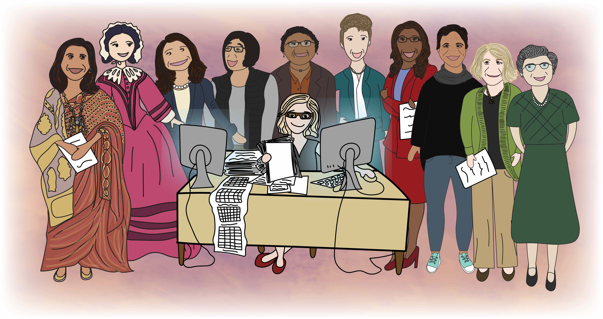
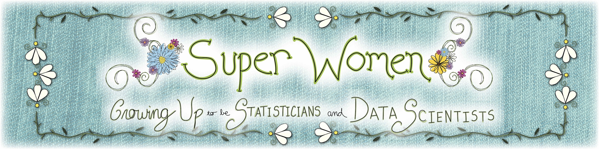

Hi there and welcome!
We are a group of Statisticians and Data Scientists!
‘What are those’, you say? Well, if you are anything like us, you’ve got lots of big questions, you like to collect information or data about those questions, and you like to find patterns in the data to answer those questions to help make the world better – like a super hero!
We would love to tell you a little bit about ourselves both when we were young and who we are now!

Educators & Caregivers
About the book
This children’s book features a group of women statisticians and data scientists. On each page of the book, one person is featured with the left side of the page describing the individual when she was young and the right side of the page describing the individual today.
Editors and illustrators of the book
The book was edited by Stephanie Hicks and Jessica Crowell and illustrated by Jessica Crowell with an incredible amount of support from the Super Women Team.
Jessica Crowell is a videographer and editor, trained at the Maryland Institute College of Art (MICA), and now in the Department of Biostatistics at Johns Hopkins, where she works with faculty and staff on multimedia projects as part of work in the Johns Hopkins Data Science Lab.
Stephanie Hicks is a problem-forward scientist who uses statistics and data science tools to solve real-world problems in the biomedical data sciences. She is passionate about contributing to and supporting initiatives that promote justice, equity, diversity, and inclusion.
Why this book?
With this book, we aim to provide a playground of imagination for children to learn about statistics and data science by highlighting the stories of several individuals in these fields. We hope this inspires the next generation to learn more about these fields and how they can be used to help make the world brighter.
How do I access the book?
The children’s book is freely available now to download as a PDF on the Get the book page.
We are in the process of working with the American Statistical Association to self-publish the book on Amazon, in case someone would like a physical copy. Proceeds from this will go towards supporting the Gertrude M. Cox Scholarship.
License
The illustrations in the book and website and narrative text in the book are licensed under the CC BY-NC-ND 4.0 license.
Everything else in this project is licensed under the CC BY-NC-SA 4.0 license.
Contact
Stephanie Hicks, PhD
Associate Professor
Department of Biostatistics, Johns Hopkins Bloomberg School of Public Health
Faculty member, JHU Data Science Lab (DaSL)
Co-founder, R-Ladies Baltimore
stephaniehicks.com
